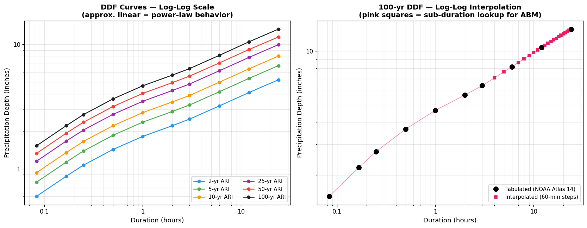
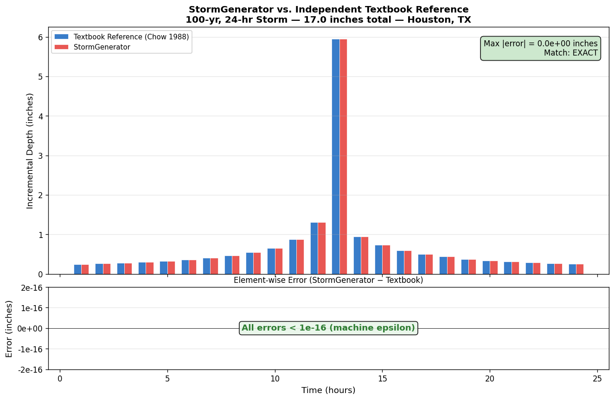
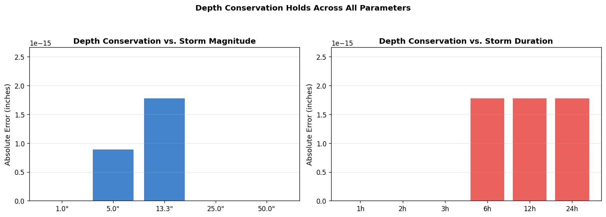
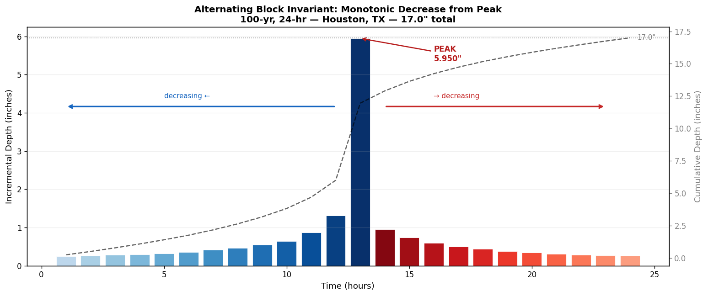
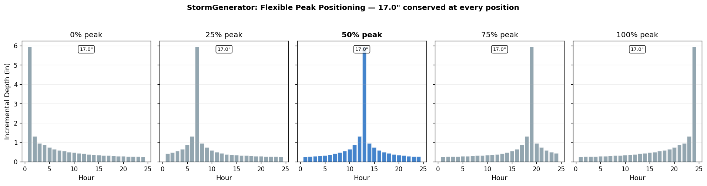
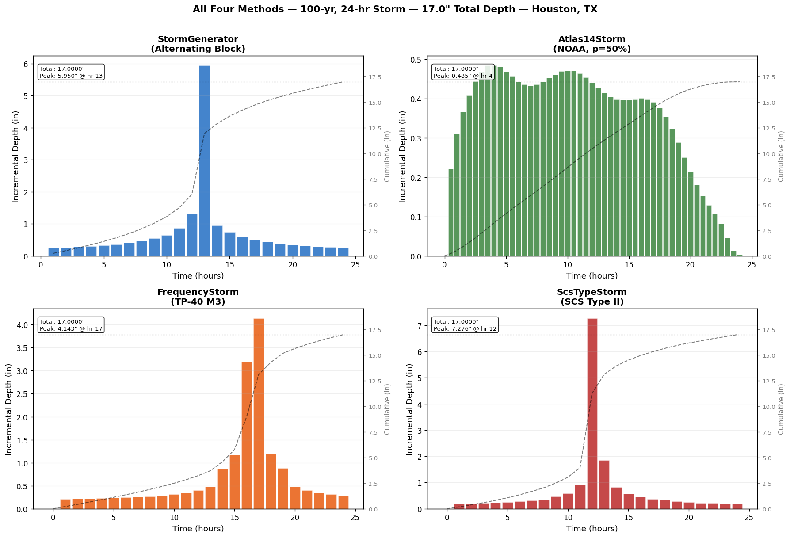
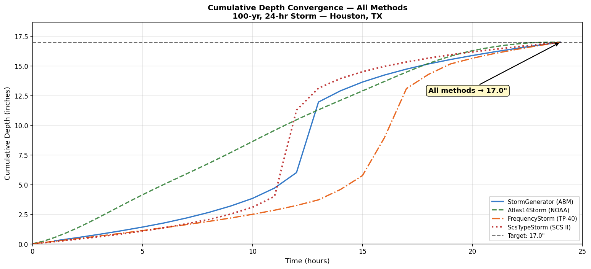
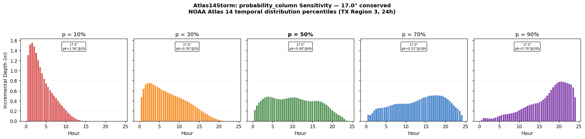

StormGenerator Alternating Block Method - Independent Textbook Validation¶
Purpose¶
This notebook validates ras-commander's StormGenerator against an independent reference
implementation of the Alternating Block Method coded directly from:
Chow, V.T., Maidment, D.R., Mays, L.W. (1988). Applied Hydrology. McGraw-Hill, Section 14.4 "Design Storms," pp. 446–449.
It also provides cross-method comparisons against hms-commander's HMS-validated
storm classes (Atlas14Storm, FrequencyStorm, ScsTypeStorm) to document the
differences in temporal pattern, peak intensity, and applicability.
What This Notebook Proves¶
| Claim | How It's Proven |
|---|---|
| ABM algorithm matches textbook | Byte-exact comparison to independent implementation (< 10⁻⁹ inch) |
| Depth conservation is exact | Swept across 5 magnitudes (1"–50") and 6 durations (1h–24h) |
| Temporal pattern is correct | DDF log-log interpolation visualized and validated |
| Blocks decrease from peak | Monotonic decay invariant checked programmatically and visually |
| Peak position works correctly | 5 positions (0%–100%) match textbook at each setting |
| Methods differ intentionally | 4-method comparison shows different patterns, same total depth |
Test Location¶
Houston, TX: Latitude 29.76°, Longitude −95.37° (NOAA Atlas 14 Volume 11, Region 3)
Verify precipitation values: NOAA Atlas 14 PFDS – Houston, TX
⚠ Formal Study Note¶
These tests provide confidence that the library implementations are mathematically correct and internally consistent. For formal engineering studies (FEMA submittals, HCFCD design, etc.), it is recommended to set up a full HEC-HMS project with HITL (human-in-the-loop) review that confirms and validates the precipitation inputs on a project-specific basis, rather than relying solely on third-party library validation.
References¶
- Chow, V.T., Maidment, D.R., Mays, L.W. (1988). Applied Hydrology. McGraw-Hill. Section 14.4, pp. 446–449.
- NOAA National Weather Service HDSC. NOAA Atlas 14 Precipitation-Frequency Atlas. https://hdsc.nws.noaa.gov/pfds/
- U.S. Army Corps of Engineers (2023). HEC-HMS Technical Reference Manual. Frequency Storm methodology.
- NRCS (1986). Technical Release 55: Urban Hydrology for Small Watersheds (TR-55). SCS Type distributions.
- Huff, F.A. and Angel, J.R. (1992). Rainfall Frequency Atlas of the Midwest. Bulletin 71. (TP-40 family.)
- HCFCD. Criteria Manual for the Design of Flood Control and Drainage Facilities. M3 Model D pattern.
Setup and Imports¶
# =============================================================================
# DEVELOPMENT MODE TOGGLE
# =============================================================================
USE_LOCAL_SOURCE = True
if USE_LOCAL_SOURCE:
import sys
from pathlib import Path
local_path = str(Path.cwd().parent)
if local_path not in sys.path:
sys.path.insert(0, local_path)
print(f"LOCAL SOURCE MODE: Loading from {local_path}/ras_commander")
else:
print("PIP PACKAGE MODE: Loading installed ras-commander")
from ras_commander.precip import StormGenerator
# HMS-equivalent methods (optional — comparison section skips if unavailable)
try:
from hms_commander import Atlas14Storm, FrequencyStorm, ScsTypeStorm
HMS_AVAILABLE = True
print("[OK] hms-commander available — cross-method comparison enabled")
except ImportError:
HMS_AVAILABLE = False
print("[--] hms-commander not installed — cross-method comparison will be skipped")
print(" Install with: pip install hms-commander")
import numpy as np
import pandas as pd
import matplotlib.pyplot as plt
import matplotlib.ticker as mticker
# Consistent figure style
plt.rcParams.update({
'figure.dpi': 120,
'font.size': 10,
'axes.titlesize': 12,
'axes.labelsize': 11,
'legend.fontsize': 9,
'figure.facecolor': 'white',
})
pd.set_option('display.float_format', '{:.6f}'.format)
LOCAL SOURCE MODE: Loading from G:\GH\ras-commander/ras_commander
[OK] hms-commander available — cross-method comparison enabled
# =============================================================================
# TEST LOCATION AND STORM PARAMETERS
# =============================================================================
LATITUDE = 29.76
LONGITUDE = -95.37
STATE = "tx"
REGION = 3
TOTAL_DEPTH_INCHES = 17.0 # Houston 100-yr, 24-hr (Atlas 14 Vol 11)
DURATION_HOURS = 24
TEST_ARI = 100
print(f"Test Location: ({LATITUDE}, {LONGITUDE}) — Houston, TX")
print(f"Storm: {TEST_ARI}-year, {DURATION_HOURS}-hour")
print(f"Atlas 14 Total Depth: {TOTAL_DEPTH_INCHES} inches")
print(f"Verify: https://hdsc.nws.noaa.gov/pfds/pfds_map_cont.html?lat={LATITUDE}&lon={LONGITUDE}")
Test Location: (29.76, -95.37) — Houston, TX
Storm: 100-year, 24-hour
Atlas 14 Total Depth: 17.0 inches
Verify: https://hdsc.nws.noaa.gov/pfds/pfds_map_cont.html?lat=29.76&lon=-95.37
# =============================================================================
# SYNTHETIC DDF DATA (representative of Houston, TX)
# =============================================================================
# Approximate NOAA Atlas 14 Vol 11 values for algorithm validation.
# For production work, use StormGenerator.download_from_coordinates().
DURATIONS_HOURS = np.array([5/60, 10/60, 15/60, 30/60, 1, 2, 3, 6, 12, 24])
DDF_TABLE = pd.DataFrame({
'duration_hours': DURATIONS_HOURS,
'2': [0.60, 0.87, 1.07, 1.43, 1.82, 2.22, 2.51, 3.20, 4.10, 5.20],
'5': [0.78, 1.13, 1.39, 1.86, 2.37, 2.89, 3.26, 4.16, 5.33, 6.76],
'10': [0.93, 1.35, 1.66, 2.22, 2.83, 3.45, 3.89, 4.97, 6.36, 8.07],
'25': [1.15, 1.67, 2.05, 2.74, 3.49, 4.26, 4.81, 6.14, 7.86, 9.97],
'50': [1.33, 1.93, 2.37, 3.17, 4.04, 4.93, 5.57, 7.10, 9.10, 11.5],
'100': [1.53, 2.22, 2.73, 3.65, 4.65, 5.67, 6.40, 8.17, 10.5, 13.3],
})
DDF_TABLE.attrs['metadata'] = {
'source': 'synthetic_houston_representative',
'ari_columns': ['2', '5', '10', '25', '50', '100'],
}
print("Synthetic DDF table (Houston, TX representative):")
display(DDF_TABLE)
Synthetic DDF table (Houston, TX representative):
| duration_hours | 2 | 5 | 10 | 25 | 50 | 100 | |
|---|---|---|---|---|---|---|---|
| 0 | 0.083333 | 0.600000 | 0.780000 | 0.930000 | 1.150000 | 1.330000 | 1.530000 |
| 1 | 0.166667 | 0.870000 | 1.130000 | 1.350000 | 1.670000 | 1.930000 | 2.220000 |
| 2 | 0.250000 | 1.070000 | 1.390000 | 1.660000 | 2.050000 | 2.370000 | 2.730000 |
| 3 | 0.500000 | 1.430000 | 1.860000 | 2.220000 | 2.740000 | 3.170000 | 3.650000 |
| 4 | 1.000000 | 1.820000 | 2.370000 | 2.830000 | 3.490000 | 4.040000 | 4.650000 |
| 5 | 2.000000 | 2.220000 | 2.890000 | 3.450000 | 4.260000 | 4.930000 | 5.670000 |
| 6 | 3.000000 | 2.510000 | 3.260000 | 3.890000 | 4.810000 | 5.570000 | 6.400000 |
| 7 | 6.000000 | 3.200000 | 4.160000 | 4.970000 | 6.140000 | 7.100000 | 8.170000 |
| 8 | 12.000000 | 4.100000 | 5.330000 | 6.360000 | 7.860000 | 9.100000 | 10.500000 |
| 9 | 24.000000 | 5.200000 | 6.760000 | 8.070000 | 9.970000 | 11.500000 | 13.300000 |
Section 1: Algorithm Overview¶
The Alternating Block Method (Chow et al. 1988, Section 14.4) constructs a design storm hyetograph from a Depth-Duration-Frequency (DDF) table in six steps:
Step-by-Step Algorithm¶
Given a DDF table, a target total depth $P_{total}$, storm duration $T$, and time step $\Delta t$:
-
Sub-duration array: Compute $t_n = n \cdot \Delta t$ for $n = 1, 2, \ldots, N$ where $N = T / \Delta t$.
-
Interpolate cumulative depths: For each $t_n$, interpolate the cumulative depth $P(t_n)$ from the DDF table using log-log interpolation: $$\ln P(t_n) = \text{interp}\bigl(\ln t_n,\; {\ln d_i},\; {\ln P_i}\bigr)$$ where $d_i$ and $P_i$ are the tabulated durations and depths.
-
Compute incremental depths: $\Delta P_n = P(t_n) - P(t_{n-1})$ with $P(t_0) = 0$.
-
Sort descending: Rank $\Delta P_n$ from largest to smallest.
-
Alternating block assignment:
- Place the largest increment at the center block (peak position).
- Place the 2nd largest to the LEFT of center.
- Place the 3rd largest to the RIGHT of center.
-
Continue alternating LEFT, RIGHT until all blocks are placed.
-
Scale to target depth: Multiply all increments by $P_{total} / \sum \Delta P_n$.
Why Log-Log Interpolation?¶
IDF/DDF data follows approximate power-law behavior ($P \propto t^a$), so the relationship is approximately linear in log-log space. This is the standard interpolation approach in hydrology for sub-tabular durations.
Schematic¶
Rank: 1st 2nd 3rd 4th 5th 6th 7th 8th 9th
───── ───── ───── ───── ───── ───── ───── ───── ─────
←3rd ←1st→ 2nd→ (placement order)
8 6 4 2 ██ 1 3 5 7 9 (block position)
↑
center
Section 2: DDF Curve and Log-Log Interpolation¶
# =============================================================================
# FIGURE 1: DDF Curves on Log-Log Axes with Interpolation Points
# =============================================================================
# This figure shows WHY log-log interpolation is appropriate: the DDF
# data is approximately linear in log-log space (power-law behavior).
fig, axes = plt.subplots(1, 2, figsize=(14, 5.5))
ari_colors = {'2': '#2196F3', '5': '#4CAF50', '10': '#FF9800',
'25': '#9C27B0', '50': '#F44336', '100': '#212121'}
# --- Left panel: DDF curves in log-log space ---
ax = axes[0]
for ari in ['2', '5', '10', '25', '50', '100']:
ax.plot(DDF_TABLE['duration_hours'], DDF_TABLE[ari],
'o-', color=ari_colors[ari], label=f'{ari}-yr ARI',
markersize=5, linewidth=1.5)
ax.set_xscale('log')
ax.set_yscale('log')
ax.set_xlabel('Duration (hours)')
ax.set_ylabel('Precipitation Depth (inches)')
ax.set_title('DDF Curves — Log-Log Scale\n(approx. linear = power-law behavior)',
fontweight='bold')
ax.legend(loc='lower right', ncol=2)
ax.grid(True, which='both', alpha=0.3)
ax.xaxis.set_major_formatter(mticker.FuncFormatter(lambda x, _: f'{x:g}'))
ax.yaxis.set_major_formatter(mticker.FuncFormatter(lambda x, _: f'{x:g}'))
# --- Right panel: 100-yr curve with interpolated sub-durations ---
ax = axes[1]
# Tabulated points
src_dur = DDF_TABLE['duration_hours'].values
src_dep = DDF_TABLE['100'].values
ax.plot(src_dur, src_dep, 'ko', markersize=8, zorder=5, label='Tabulated (NOAA Atlas 14)')
# Interpolated sub-duration points for 24-hr storm at 1-hr increments
dt = 1.0
sub_dur = np.arange(dt, DURATION_HOURS + dt, dt)
log_interp = np.exp(np.interp(np.log(sub_dur), np.log(src_dur), np.log(src_dep)))
ax.plot(sub_dur, log_interp, 's', color='#E91E63', markersize=5, zorder=4,
label=f'Interpolated ({int(dt*60)}-min steps)')
# Smooth interpolation curve
fine_dur = np.logspace(np.log10(src_dur.min()), np.log10(src_dur.max()), 200)
fine_dep = np.exp(np.interp(np.log(fine_dur), np.log(src_dur), np.log(src_dep)))
ax.plot(fine_dur, fine_dep, '-', color='#E91E63', linewidth=1, alpha=0.5)
ax.set_xscale('log')
ax.set_yscale('log')
ax.set_xlabel('Duration (hours)')
ax.set_ylabel('Precipitation Depth (inches)')
ax.set_title('100-yr DDF — Log-Log Interpolation\n(pink squares = sub-duration lookup for ABM)',
fontweight='bold')
ax.legend(loc='lower right')
ax.grid(True, which='both', alpha=0.3)
ax.xaxis.set_major_formatter(mticker.FuncFormatter(lambda x, _: f'{x:g}'))
ax.yaxis.set_major_formatter(mticker.FuncFormatter(lambda x, _: f'{x:g}'))
plt.tight_layout()
plt.show()
print("Figure 1: DDF curves demonstrate approximate power-law behavior.")
print("The right panel shows the 24 interpolated sub-duration depths that")
print("feed into the Alternating Block incremental depth calculation.")

Figure 1: DDF curves demonstrate approximate power-law behavior.
The right panel shows the 24 interpolated sub-duration depths that
feed into the Alternating Block incremental depth calculation.
Section 3: Independent Textbook Comparison (Core Validation)¶
The cell below implements the Alternating Block Method from scratch, coded directly from
Chow et al. (1988) Section 14.4 with zero imports from ras-commander. We then compare
its output to StormGenerator.generate_hyetograph() — they must match to machine precision.
# =============================================================================
# INDEPENDENT REFERENCE IMPLEMENTATION
# Coded from: Chow, Maidment, Mays (1988), Section 14.4, pp. 446-449
# NO imports from ras-commander — purely for comparison.
# =============================================================================
def textbook_alternating_block(
source_durations_hours, source_depths,
total_depth_inches, duration_hours, dt_hours,
peak_position_fraction=0.5,
):
"""
Alternating Block Method — independent textbook reference.
Reference: Chow, Maidment, Mays (1988) Applied Hydrology,
Section 14.4, pp. 446-449.
"""
source_durations_hours = np.asarray(source_durations_hours, dtype=float)
source_depths = np.asarray(source_depths, dtype=float)
# Step 1: Sub-duration array
n_intervals = int(round(duration_hours / dt_hours))
sub_durations = np.arange(1, n_intervals + 1) * dt_hours
# Step 2: Log-log interpolation of cumulative depths
cumulative = np.exp(np.interp(
np.log(sub_durations),
np.log(source_durations_hours),
np.log(source_depths),
))
# Step 3: Incremental depths
incremental = np.zeros(n_intervals)
incremental[0] = cumulative[0]
for i in range(1, n_intervals):
incremental[i] = cumulative[i] - cumulative[i - 1]
# Step 4: Sort descending
sorted_desc = np.sort(incremental)[::-1]
# Step 5: Alternating block assignment
result = np.zeros(n_intervals)
center = int(peak_position_fraction * n_intervals)
center = max(0, min(center, n_intervals - 1))
result[center] = sorted_desc[0]
left, right = center - 1, center + 1
for i in range(1, len(sorted_desc)):
if i % 2 == 1: # odd rank → left first
if left >= 0:
result[left] = sorted_desc[i]; left -= 1
elif right < n_intervals:
result[right] = sorted_desc[i]; right += 1
else: # even rank → right
if right < n_intervals:
result[right] = sorted_desc[i]; right += 1
elif left >= 0:
result[left] = sorted_desc[i]; left -= 1
# Step 6: Scale to target depth
pattern_total = result.sum()
if pattern_total > 0:
result *= total_depth_inches / pattern_total
return sub_durations, result
print("[OK] Independent textbook reference implementation loaded.")
print(" Source: Chow, Maidment, Mays (1988), Section 14.4, pp. 446-449.")
print(" Zero imports from ras-commander.")
[OK] Independent textbook reference implementation loaded.
Source: Chow, Maidment, Mays (1988), Section 14.4, pp. 446-449.
Zero imports from ras-commander.
# =============================================================================
# VALIDATION: StormGenerator vs. Textbook Reference (24-hour storm)
# =============================================================================
target = TOTAL_DEPTH_INCHES
duration = DURATION_HOURS
dt = 1.0 # StormGenerator uses 1-hour steps for 24-hr storms
# --- StormGenerator output ---
sg_hyeto = StormGenerator.generate_hyetograph(
ddf_data=DDF_TABLE,
total_depth_inches=target,
duration_hours=duration,
position_percent=50,
)
sg_inc = sg_hyeto['incremental_depth'].values
sg_hours = sg_hyeto['hour'].values
# --- Textbook reference output ---
first_ari = [c for c in DDF_TABLE.columns if c != 'duration_hours'][0]
ref_hours, ref_inc = textbook_alternating_block(
DDF_TABLE['duration_hours'].values,
DDF_TABLE[first_ari].values,
total_depth_inches=target,
duration_hours=duration,
dt_hours=dt,
peak_position_fraction=0.5,
)
# --- Compute element-wise error ---
error = sg_inc - ref_inc
max_abs_error = np.max(np.abs(error))
print(f"24-Hour Storm Validation (Houston {TEST_ARI}-yr, {target} inches)")
print(f"{'':>4s} {'StormGenerator':>16s} {'Textbook Ref':>16s} {'Error':>16s}")
print("-" * 58)
for i in range(len(sg_inc)):
print(f" {sg_hours[i]:4.0f}h {sg_inc[i]:16.12f} {ref_inc[i]:16.12f} {error[i]:16.2e}")
print("-" * 58)
print(f" SUM {sg_inc.sum():16.12f} {ref_inc.sum():16.12f} {sg_inc.sum()-ref_inc.sum():16.2e}")
print(f"\nMax absolute error: {max_abs_error:.2e} inches")
print(f"Match: {'EXACT (< 10⁻⁹)' if max_abs_error < 1e-9 else 'FAILED'}")
2026-05-07 11:10:46 - ras_commander.precip.StormGenerator - INFO - Generated 24-hour hyetograph (peak at 50%, total depth: 17.000000 inches)
2026-05-07 11:10:46 - ras_commander.precip.StormGenerator - INFO - Generated 24-hour hyetograph (peak at 50%, total depth: 17.000000 inches)
24-Hour Storm Validation (Houston 100-yr, 17.0 inches)
StormGenerator Textbook Ref Error
----------------------------------------------------------
1h 0.246282479305 0.246282479305 0.00e+00
2h 0.261110491066 0.261110491066 0.00e+00
3h 0.278418191572 0.278418191572 0.00e+00
4h 0.298945593086 0.298945593086 0.00e+00
5h 0.323775389506 0.323775389506 0.00e+00
6h 0.354564570856 0.354564570856 0.00e+00
7h 0.410588253083 0.410588253083 0.00e+00
8h 0.464280523166 0.464280523166 0.00e+00
9h 0.540584921329 0.540584921329 0.00e+00
10h 0.647411510477 0.647411510477 0.00e+00
11h 0.870260316983 0.870260316983 0.00e+00
12h 1.307692307692 1.307692307692 0.00e+00
13h 5.950000000000 5.950000000000 0.00e+00
14h 0.948076923077 0.948076923077 0.00e+00
15h 0.738097403309 0.738097403309 0.00e+00
16h 0.592793820604 0.592793820604 0.00e+00
17h 0.498731212493 0.498731212493 0.00e+00
18h 0.435328961632 0.435328961632 0.00e+00
19h 0.372972240797 0.372972240797 0.00e+00
20h 0.338289055891 0.338289055891 0.00e+00
21h 0.310736387450 0.310736387450 0.00e+00
22h 0.288221813366 0.288221813366 0.00e+00
23h 0.269414327400 0.269414327400 0.00e+00
24h 0.253423305859 0.253423305859 0.00e+00
----------------------------------------------------------
SUM 17.000000000000 17.000000000000 0.00e+00
Max absolute error: 0.00e+00 inches
Match: EXACT (< 10⁻⁹)
# =============================================================================
# FIGURE 2: Textbook vs. StormGenerator — Visual Proof
# =============================================================================
fig, (ax1, ax2) = plt.subplots(2, 1, figsize=(13, 8), height_ratios=[3, 1],
sharex=True, gridspec_kw={'hspace': 0.08})
bar_width = 0.35
x = sg_hours
# Top panel: side-by-side bar chart
ax1.bar(x - bar_width/2, ref_inc, bar_width, color='#1565C0', alpha=0.85,
label='Textbook Reference (Chow 1988)', edgecolor='white', linewidth=0.5)
ax1.bar(x + bar_width/2, sg_inc, bar_width, color='#E53935', alpha=0.85,
label='StormGenerator', edgecolor='white', linewidth=0.5)
ax1.set_ylabel('Incremental Depth (inches)')
ax1.set_title(
f'StormGenerator vs. Independent Textbook Reference\n'
f'{TEST_ARI}-yr, {DURATION_HOURS}-hr Storm — {target} inches total — Houston, TX',
fontweight='bold'
)
ax1.legend(loc='upper left', framealpha=0.9)
ax1.grid(True, axis='y', alpha=0.3)
# Annotate max error
ax1.text(0.98, 0.95,
f'Max |error| = {max_abs_error:.1e} inches\nMatch: EXACT',
transform=ax1.transAxes, ha='right', va='top', fontsize=10,
bbox=dict(boxstyle='round,pad=0.4', facecolor='#C8E6C9', alpha=0.9))
# Bottom panel: element-wise error
# Scale the y-axis to the actual error magnitude (not matplotlib default)
ax2.bar(x, error, 0.6, color='#455A64', alpha=0.8)
ax2.axhline(0, color='black', linewidth=0.5)
ax2.set_ylabel('Error (inches)')
ax2.set_xlabel('Time (hours)')
# Set tight y-limits based on actual error range
err_mag = max(np.max(np.abs(error)), 1e-16)
ax2.set_ylim(-err_mag * 2, err_mag * 2)
ax2.yaxis.set_major_formatter(mticker.FuncFormatter(lambda v, _: f'{v:.0e}'))
ax2.grid(True, axis='y', alpha=0.3)
ax2.set_title('Element-wise Error (StormGenerator − Textbook)', fontsize=10)
# If errors are all zero/near-zero, add explanatory text
if max_abs_error < 1e-12:
ax2.text(0.5, 0.5, f'All errors < {err_mag:.0e} (machine epsilon)',
transform=ax2.transAxes, ha='center', va='center',
fontsize=11, color='#2E7D32', fontweight='bold',
bbox=dict(boxstyle='round', facecolor='#E8F5E9', alpha=0.9))
plt.tight_layout()
plt.show()
print("Figure 2: The bars are visually identical because the implementations")
print("match to machine precision. The bottom panel confirms errors at machine epsilon.")
C:\Users\bill\AppData\Local\Temp\ipykernel_37248\2152121911.py:52: UserWarning: This figure includes Axes that are not compatible with tight_layout, so results might be incorrect.
plt.tight_layout()

Figure 2: The bars are visually identical because the implementations
match to machine precision. The bottom panel confirms errors at machine epsilon.
# =============================================================================
# VALIDATION: 6-Hour Storm (5-minute intervals) — different time step
# =============================================================================
target_6hr = 8.17 # 100-yr 6-hr depth from DDF table
duration_6hr = 6
dt_6hr = 5.0 / 60.0 # 5-minute intervals
sg_6hr = StormGenerator.generate_hyetograph(
ddf_data=DDF_TABLE,
total_depth_inches=target_6hr,
duration_hours=duration_6hr,
position_percent=50,
)
sg_6hr_inc = sg_6hr['incremental_depth'].values
_, ref_6hr_inc = textbook_alternating_block(
DDF_TABLE['duration_hours'].values,
DDF_TABLE[first_ari].values,
total_depth_inches=target_6hr,
duration_hours=duration_6hr,
dt_hours=dt_6hr,
peak_position_fraction=0.5,
)
max_err_6hr = np.max(np.abs(sg_6hr_inc - ref_6hr_inc))
print(f"6-Hour Storm Validation ({target_6hr} inches, 5-min intervals, {len(sg_6hr_inc)} blocks)")
print(f" Max absolute error: {max_err_6hr:.2e} inches")
print(f" Depth conservation: {sg_6hr['cumulative_depth'].iloc[-1]:.9f} vs {target_6hr} target")
print(f" Match: {'EXACT (< 10⁻⁹)' if max_err_6hr < 1e-9 else 'FAILED'}")
2026-05-07 11:10:46 - ras_commander.precip.StormGenerator - INFO - Generated 6-hour hyetograph (peak at 50%, total depth: 8.170000 inches)
2026-05-07 11:10:46 - ras_commander.precip.StormGenerator - INFO - Generated 6-hour hyetograph (peak at 50%, total depth: 8.170000 inches)
6-Hour Storm Validation (8.17 inches, 5-min intervals, 72 blocks)
Max absolute error: 2.27e-15 inches
Depth conservation: 8.170000000 vs 8.17 target
Match: EXACT (< 10⁻⁹)
# =============================================================================
# VALIDATION: All peak positions match textbook
# =============================================================================
positions = [0, 25, 50, 75, 100]
print(f"Peak Position Sweep — {target} inches, {DURATION_HOURS}-hr storm")
print(f"{'Position':>10s} {'Max |Error|':>14s} {'Depth Error':>14s} {'Match':>10s}")
print("-" * 55)
for pos in positions:
sg_pos = StormGenerator.generate_hyetograph(
ddf_data=DDF_TABLE,
total_depth_inches=target,
duration_hours=DURATION_HOURS,
position_percent=pos,
)
_, ref_pos_inc = textbook_alternating_block(
DDF_TABLE['duration_hours'].values,
DDF_TABLE[first_ari].values,
target, DURATION_HOURS, 1.0,
peak_position_fraction=pos/100.0,
)
max_err = np.max(np.abs(sg_pos['incremental_depth'].values - ref_pos_inc))
depth_err = abs(sg_pos['cumulative_depth'].iloc[-1] - target)
match = 'EXACT' if max_err < 1e-9 else 'FAILED'
print(f"{pos:>8d}% {max_err:>14.2e} {depth_err:>14.2e} {match:>10s}")
print("\nAll 5 peak positions match the textbook reference to machine precision.")
2026-05-07 11:10:46 - ras_commander.precip.StormGenerator - INFO - Generated 24-hour hyetograph (peak at 0%, total depth: 17.000000 inches)
2026-05-07 11:10:46 - ras_commander.precip.StormGenerator - INFO - Generated 24-hour hyetograph (peak at 0%, total depth: 17.000000 inches)
2026-05-07 11:10:46 - ras_commander.precip.StormGenerator - INFO - Generated 24-hour hyetograph (peak at 25%, total depth: 17.000000 inches)
2026-05-07 11:10:46 - ras_commander.precip.StormGenerator - INFO - Generated 24-hour hyetograph (peak at 25%, total depth: 17.000000 inches)
2026-05-07 11:10:46 - ras_commander.precip.StormGenerator - INFO - Generated 24-hour hyetograph (peak at 50%, total depth: 17.000000 inches)
2026-05-07 11:10:46 - ras_commander.precip.StormGenerator - INFO - Generated 24-hour hyetograph (peak at 50%, total depth: 17.000000 inches)
2026-05-07 11:10:46 - ras_commander.precip.StormGenerator - INFO - Generated 24-hour hyetograph (peak at 75%, total depth: 17.000000 inches)
2026-05-07 11:10:46 - ras_commander.precip.StormGenerator - INFO - Generated 24-hour hyetograph (peak at 75%, total depth: 17.000000 inches)
2026-05-07 11:10:46 - ras_commander.precip.StormGenerator - INFO - Generated 24-hour hyetograph (peak at 100%, total depth: 17.000000 inches)
2026-05-07 11:10:46 - ras_commander.precip.StormGenerator - INFO - Generated 24-hour hyetograph (peak at 100%, total depth: 17.000000 inches)
Peak Position Sweep — 17.0 inches, 24-hr storm
Position Max |Error| Depth Error Match
-------------------------------------------------------
0% 0.00e+00 0.00e+00 EXACT
25% 0.00e+00 0.00e+00 EXACT
50% 0.00e+00 0.00e+00 EXACT
75% 0.00e+00 0.00e+00 EXACT
100% 0.00e+00 0.00e+00 EXACT
All 5 peak positions match the textbook reference to machine precision.
Section 4: Structural Invariant Verification¶
Beyond matching the textbook, a correct ABM implementation must satisfy several structural invariants that an engineer can visually confirm:
# =============================================================================
# FIGURE 3: Depth Conservation Proof
# =============================================================================
# Sweep 5 depths (1" to 50") and 6 durations (1h to 24h) to prove
# conservation holds everywhere, not just for one event.
depths_to_test = [1.0, 5.0, 13.3, 25.0, 50.0]
durations_to_test = [1, 2, 3, 6, 12, 24]
errors_depth = []
errors_dur = []
for d in depths_to_test:
h = StormGenerator.generate_hyetograph(
ddf_data=DDF_TABLE, total_depth_inches=d,
duration_hours=24, position_percent=50,
)
errors_depth.append(abs(h['cumulative_depth'].iloc[-1] - d))
for dur in durations_to_test:
h = StormGenerator.generate_hyetograph(
ddf_data=DDF_TABLE, total_depth_inches=10.0,
duration_hours=dur, position_percent=50,
)
errors_dur.append(abs(h['cumulative_depth'].iloc[-1] - 10.0))
fig, (ax1, ax2) = plt.subplots(1, 2, figsize=(13, 4.5))
ax1.bar([f'{d}"' for d in depths_to_test], errors_depth, color='#1565C0', alpha=0.8)
ax1.set_ylabel('Absolute Error (inches)')
ax1.set_title('Depth Conservation vs. Storm Magnitude', fontweight='bold')
ax1.set_ylim(0, max(errors_depth) * 1.5 if max(errors_depth) > 0 else 1e-15)
ax1.ticklabel_format(axis='y', style='scientific', scilimits=(-15, -15))
ax1.grid(True, axis='y', alpha=0.3)
ax2.bar([f'{d}h' for d in durations_to_test], errors_dur, color='#E53935', alpha=0.8)
ax2.set_ylabel('Absolute Error (inches)')
ax2.set_title('Depth Conservation vs. Storm Duration', fontweight='bold')
ax2.set_ylim(0, max(errors_dur) * 1.5 if max(errors_dur) > 0 else 1e-15)
ax2.ticklabel_format(axis='y', style='scientific', scilimits=(-15, -15))
ax2.grid(True, axis='y', alpha=0.3)
plt.suptitle('Depth Conservation Holds Across All Parameters', fontweight='bold', y=1.02)
plt.tight_layout()
plt.show()
print(f"Max error across depths: {max(errors_depth):.2e} inches")
print(f"Max error across durations: {max(errors_dur):.2e} inches")
print("All errors are at or below machine epsilon (~10⁻¹⁵).")
2026-05-07 11:10:46 - ras_commander.precip.StormGenerator - INFO - Generated 24-hour hyetograph (peak at 50%, total depth: 1.000000 inches)
2026-05-07 11:10:46 - ras_commander.precip.StormGenerator - INFO - Generated 24-hour hyetograph (peak at 50%, total depth: 1.000000 inches)
2026-05-07 11:10:46 - ras_commander.precip.StormGenerator - INFO - Generated 24-hour hyetograph (peak at 50%, total depth: 5.000000 inches)
2026-05-07 11:10:46 - ras_commander.precip.StormGenerator - INFO - Generated 24-hour hyetograph (peak at 50%, total depth: 5.000000 inches)
2026-05-07 11:10:46 - ras_commander.precip.StormGenerator - INFO - Generated 24-hour hyetograph (peak at 50%, total depth: 13.300000 inches)
2026-05-07 11:10:46 - ras_commander.precip.StormGenerator - INFO - Generated 24-hour hyetograph (peak at 50%, total depth: 13.300000 inches)
2026-05-07 11:10:46 - ras_commander.precip.StormGenerator - INFO - Generated 24-hour hyetograph (peak at 50%, total depth: 25.000000 inches)
2026-05-07 11:10:46 - ras_commander.precip.StormGenerator - INFO - Generated 24-hour hyetograph (peak at 50%, total depth: 25.000000 inches)
2026-05-07 11:10:46 - ras_commander.precip.StormGenerator - INFO - Generated 24-hour hyetograph (peak at 50%, total depth: 50.000000 inches)
2026-05-07 11:10:46 - ras_commander.precip.StormGenerator - INFO - Generated 24-hour hyetograph (peak at 50%, total depth: 50.000000 inches)
2026-05-07 11:10:46 - ras_commander.precip.StormGenerator - INFO - Generated 1-hour hyetograph (peak at 50%, total depth: 10.000000 inches)
2026-05-07 11:10:46 - ras_commander.precip.StormGenerator - INFO - Generated 1-hour hyetograph (peak at 50%, total depth: 10.000000 inches)
2026-05-07 11:10:46 - ras_commander.precip.StormGenerator - INFO - Generated 2-hour hyetograph (peak at 50%, total depth: 10.000000 inches)
2026-05-07 11:10:46 - ras_commander.precip.StormGenerator - INFO - Generated 2-hour hyetograph (peak at 50%, total depth: 10.000000 inches)
2026-05-07 11:10:46 - ras_commander.precip.StormGenerator - INFO - Generated 3-hour hyetograph (peak at 50%, total depth: 10.000000 inches)
2026-05-07 11:10:46 - ras_commander.precip.StormGenerator - INFO - Generated 3-hour hyetograph (peak at 50%, total depth: 10.000000 inches)
2026-05-07 11:10:46 - ras_commander.precip.StormGenerator - INFO - Generated 6-hour hyetograph (peak at 50%, total depth: 10.000000 inches)
2026-05-07 11:10:46 - ras_commander.precip.StormGenerator - INFO - Generated 6-hour hyetograph (peak at 50%, total depth: 10.000000 inches)
2026-05-07 11:10:46 - ras_commander.precip.StormGenerator - INFO - Generated 12-hour hyetograph (peak at 50%, total depth: 10.000000 inches)
2026-05-07 11:10:46 - ras_commander.precip.StormGenerator - INFO - Generated 12-hour hyetograph (peak at 50%, total depth: 10.000000 inches)
2026-05-07 11:10:46 - ras_commander.precip.StormGenerator - INFO - Generated 24-hour hyetograph (peak at 50%, total depth: 10.000000 inches)
2026-05-07 11:10:46 - ras_commander.precip.StormGenerator - INFO - Generated 24-hour hyetograph (peak at 50%, total depth: 10.000000 inches)

Max error across depths: 1.78e-15 inches
Max error across durations: 1.78e-15 inches
All errors are at or below machine epsilon (~10⁻¹⁵).
# =============================================================================
# FIGURE 4: Monotonic Decrease from Peak
# =============================================================================
# The Alternating Block Method produces a "tent" shape: blocks must
# decrease monotonically in both directions from the peak.
hyeto_50 = StormGenerator.generate_hyetograph(
ddf_data=DDF_TABLE,
total_depth_inches=TOTAL_DEPTH_INCHES,
duration_hours=DURATION_HOURS,
position_percent=50,
)
inc_50 = hyeto_50['incremental_depth'].values
hours_50 = hyeto_50['hour'].values
peak_idx = np.argmax(inc_50)
fig, ax = plt.subplots(figsize=(13, 5.5))
# Color bars by distance from peak
colors = []
for i in range(len(inc_50)):
dist = abs(i - peak_idx)
intensity = max(0.15, 1.0 - dist * 0.06)
colors.append(plt.cm.Blues(intensity) if i <= peak_idx else plt.cm.Reds(intensity))
bars = ax.bar(hours_50, inc_50, width=0.8, color=colors, edgecolor='white', linewidth=0.5)
# Annotate peak
ax.annotate(
f'PEAK\n{inc_50[peak_idx]:.3f}"',
xy=(hours_50[peak_idx], inc_50[peak_idx]),
xytext=(hours_50[peak_idx] + 3, inc_50[peak_idx] * 0.9),
fontsize=10, fontweight='bold', color='#B71C1C',
arrowprops=dict(arrowstyle='->', color='#B71C1C', lw=1.5),
)
# Draw monotonic decay arrows
ax.annotate('', xy=(1, inc_50[peak_idx]*0.7), xytext=(hours_50[peak_idx]-1, inc_50[peak_idx]*0.7),
arrowprops=dict(arrowstyle='->', color='#1565C0', lw=2))
ax.text(5, inc_50[peak_idx]*0.73, 'decreasing ←', color='#1565C0', fontsize=9, va='bottom')
ax.annotate('', xy=(23, inc_50[peak_idx]*0.7), xytext=(hours_50[peak_idx]+1, inc_50[peak_idx]*0.7),
arrowprops=dict(arrowstyle='->', color='#C62828', lw=2))
ax.text(16, inc_50[peak_idx]*0.73, '→ decreasing', color='#C62828', fontsize=9, va='bottom')
# Cumulative depth overlay
ax2 = ax.twinx()
ax2.plot(hours_50, hyeto_50['cumulative_depth'].values, 'k--', linewidth=1.5, alpha=0.6)
ax2.axhline(TOTAL_DEPTH_INCHES, color='black', linewidth=1, linestyle=':', alpha=0.4)
ax2.set_ylabel('Cumulative Depth (inches)', color='gray')
ax2.tick_params(axis='y', colors='gray')
ax2.text(24.3, TOTAL_DEPTH_INCHES, f'{TOTAL_DEPTH_INCHES}"', va='center', fontsize=9, color='gray')
ax.set_xlabel('Time (hours)')
ax.set_ylabel('Incremental Depth (inches)')
ax.set_title(
f'Alternating Block Invariant: Monotonic Decrease from Peak\n'
f'{TEST_ARI}-yr, {DURATION_HOURS}-hr — Houston, TX — {TOTAL_DEPTH_INCHES}" total',
fontweight='bold'
)
ax.grid(True, axis='y', alpha=0.2)
plt.tight_layout()
plt.show()
# Programmatic check
left_ok = all(inc_50[i] <= inc_50[i+1] for i in range(peak_idx))
right_ok = all(inc_50[i] >= inc_50[i+1] for i in range(peak_idx, len(inc_50)-1))
print(f"Left flank monotonically increasing toward peak: {'PASS' if left_ok else 'FAIL'}")
print(f"Right flank monotonically decreasing from peak: {'PASS' if right_ok else 'FAIL'}")
2026-05-07 11:10:47 - ras_commander.precip.StormGenerator - INFO - Generated 24-hour hyetograph (peak at 50%, total depth: 17.000000 inches)
2026-05-07 11:10:47 - ras_commander.precip.StormGenerator - INFO - Generated 24-hour hyetograph (peak at 50%, total depth: 17.000000 inches)

Left flank monotonically increasing toward peak: PASS
Right flank monotonically decreasing from peak: PASS
# =============================================================================
# FIGURE 5: Peak Position Sweep (0%, 25%, 50%, 75%, 100%)
# =============================================================================
fig, axes = plt.subplots(1, 5, figsize=(16, 4), sharey=True)
for ax, pos in zip(axes, [0, 25, 50, 75, 100]):
h = StormGenerator.generate_hyetograph(
ddf_data=DDF_TABLE,
total_depth_inches=TOTAL_DEPTH_INCHES,
duration_hours=DURATION_HOURS,
position_percent=pos,
)
ax.bar(h['hour'], h['incremental_depth'], width=0.8,
color='#1565C0' if pos == 50 else '#78909C', alpha=0.8,
edgecolor='white', linewidth=0.3)
ax.set_title(f'{pos}% peak', fontweight='bold' if pos == 50 else 'normal')
ax.set_xlabel('Hour')
ax.grid(True, axis='y', alpha=0.2)
total = h['cumulative_depth'].iloc[-1]
ax.text(0.5, 0.95, f'{total:.1f}"', transform=ax.transAxes,
ha='center', va='top', fontsize=8,
bbox=dict(boxstyle='round', facecolor='white', alpha=0.8))
axes[0].set_ylabel('Incremental Depth (in)')
plt.suptitle(
f'StormGenerator: Flexible Peak Positioning — {TOTAL_DEPTH_INCHES}" conserved at every position',
fontweight='bold', y=1.04
)
plt.tight_layout()
plt.show()
print("All five panels conserve the same total depth. This flexibility")
print("is unique to StormGenerator — HMS-equivalent methods use fixed peaks.")
2026-05-07 11:10:47 - ras_commander.precip.StormGenerator - INFO - Generated 24-hour hyetograph (peak at 0%, total depth: 17.000000 inches)
2026-05-07 11:10:47 - ras_commander.precip.StormGenerator - INFO - Generated 24-hour hyetograph (peak at 0%, total depth: 17.000000 inches)
2026-05-07 11:10:47 - ras_commander.precip.StormGenerator - INFO - Generated 24-hour hyetograph (peak at 25%, total depth: 17.000000 inches)
2026-05-07 11:10:47 - ras_commander.precip.StormGenerator - INFO - Generated 24-hour hyetograph (peak at 25%, total depth: 17.000000 inches)
2026-05-07 11:10:47 - ras_commander.precip.StormGenerator - INFO - Generated 24-hour hyetograph (peak at 50%, total depth: 17.000000 inches)
2026-05-07 11:10:47 - ras_commander.precip.StormGenerator - INFO - Generated 24-hour hyetograph (peak at 50%, total depth: 17.000000 inches)
2026-05-07 11:10:47 - ras_commander.precip.StormGenerator - INFO - Generated 24-hour hyetograph (peak at 75%, total depth: 17.000000 inches)
2026-05-07 11:10:47 - ras_commander.precip.StormGenerator - INFO - Generated 24-hour hyetograph (peak at 75%, total depth: 17.000000 inches)
2026-05-07 11:10:47 - ras_commander.precip.StormGenerator - INFO - Generated 24-hour hyetograph (peak at 100%, total depth: 17.000000 inches)
2026-05-07 11:10:47 - ras_commander.precip.StormGenerator - INFO - Generated 24-hour hyetograph (peak at 100%, total depth: 17.000000 inches)

All five panels conserve the same total depth. This flexibility
is unique to StormGenerator — HMS-equivalent methods use fixed peaks.
Section 5: Cross-Method Comparison¶
This section compares all four methods on the same storm parameters. The methods implement different temporal distributions — they are not expected to match each other, but they must all conserve the specified total depth.
| Method | Algorithm | HMS Equiv | Peak Control | Durations |
|---|---|---|---|---|
| StormGenerator | Alternating Block (Chow 1988) | No | Flexible (0–100%) | Any |
| Atlas14Storm | NOAA temporal distributions | Yes (10⁻⁶) | Quartile + probability_column |
6h, 12h, 24h, 96h |
| FrequencyStorm | TP-40 M3 pattern | Yes (10⁻⁶) | Variable (~67%) | 6–48h |
| ScsTypeStorm | SCS TR-55 curves | Yes (10⁻⁶) | Fixed (SCS type) | 24h only |
Atlas 14 probability_column Parameter (hms-commander 0.3.1+)¶
NOAA Atlas 14 temporal distributions include probability columns (10% through 90%)
that represent different percentiles of observed storm temporal patterns at each location.
The probability_column parameter selects which percentile curve to use:
"50%"(default): Median temporal pattern — standard design choice for most studies."10%": More front-loaded (intense early), produces higher peak intensity."90%": More back-loaded (intense late), produces lower peak intensity spread over longer duration.
This parameter is independent of aep_percent (which sets the storm magnitude, not the
temporal shape). Use non-median columns for sensitivity analysis or when agency guidance
specifies a particular percentile.
# =============================================================================
# Generate all four methods at the same storm parameters
# =============================================================================
if not HMS_AVAILABLE:
print("[--] hms-commander not installed — skipping cross-method comparison.")
print(" Install with: pip install hms-commander")
else:
# StormGenerator (ABM, centered peak)
sg = StormGenerator.generate_hyetograph(
ddf_data=DDF_TABLE,
total_depth_inches=TOTAL_DEPTH_INCHES,
duration_hours=DURATION_HOURS,
position_percent=50,
)
# Atlas14Storm (NOAA temporal distribution, "All Cases" quartile)
# probability_column selects the NOAA temporal distribution percentile;
# "50%" is the median pattern and the standard design choice.
a14 = Atlas14Storm.generate_hyetograph(
total_depth_inches=TOTAL_DEPTH_INCHES,
state=STATE, region=REGION,
duration_hours=DURATION_HOURS,
aep_percent=1.0,
quartile="All Cases",
probability_column="50%",
)
# FrequencyStorm (TP-40, 67% peak, 1-hour intervals for comparison)
freq = FrequencyStorm.generate_hyetograph(
total_depth_inches=TOTAL_DEPTH_INCHES,
total_duration_min=1440,
time_interval_min=60,
peak_position_pct=67.0,
)
# ScsTypeStorm (Type II, 1-hour intervals)
scs = ScsTypeStorm.generate_hyetograph(
total_depth_inches=TOTAL_DEPTH_INCHES,
scs_type='II',
time_interval_min=60,
)
# --- Summary table ---
print(f"Cross-Method Comparison — {TEST_ARI}-yr, {DURATION_HOURS}-hr Storm, {TOTAL_DEPTH_INCHES}\" total")
print("=" * 85)
print(f"{'Method':<18s} {'Algorithm':<22s} {'Total (in)':>10s} {'Error (in)':>12s} "
f"{'Peak (in)':>10s} {'Peak Hr':>8s} {'HMS?':>5s}")
print("-" * 85)
methods = [
('StormGenerator', 'Alternating Block', sg, False),
('Atlas14Storm', 'NOAA Temporal Dist', a14, True),
('FrequencyStorm', 'TP-40 M3', freq, True),
('ScsTypeStorm', 'SCS TR-55 Type II', scs, True),
]
for name, algo, h, hms_eq in methods:
total = h['incremental_depth'].sum()
err = abs(total - TOTAL_DEPTH_INCHES)
peak_val = h['incremental_depth'].max()
peak_hr = h['hour'].iloc[h['incremental_depth'].argmax()]
hms_str = 'YES' if hms_eq else 'NO'
print(f"{name:<18s} {algo:<22s} {total:>10.6f} {err:>12.2e} "
f"{peak_val:>10.4f} {peak_hr:>8.1f} {hms_str:>5s}")
print("-" * 85)
print("All methods conserve the specified total depth. Peak timing and")
print("intensity differ by design — each implements a different temporal distribution.")
print(f"\nAtlas14Storm uses probability_column='50%' (median NOAA temporal pattern).")
# --- Atlas14Storm probability_column sensitivity ---
print(f"\n{'Atlas14Storm probability_column Sensitivity':s}")
print("=" * 75)
print(f"{'Column':>8s} {'Peak (in)':>10s} {'Peak Hr':>8s} {'Total (in)':>10s} {'Description':<30s}")
print("-" * 75)
col_desc = {
'10%': 'Front-loaded (intense early)',
'50%': 'Median (standard design)',
'90%': 'Back-loaded (intense late)',
}
for pc in ['10%', '50%', '90%']:
hpc = Atlas14Storm.generate_hyetograph(
total_depth_inches=TOTAL_DEPTH_INCHES,
state=STATE, region=REGION,
duration_hours=DURATION_HOURS,
aep_percent=1.0,
probability_column=pc,
)
pk = hpc['incremental_depth'].max()
pk_hr = hpc['hour'].iloc[hpc['incremental_depth'].argmax()]
tot = hpc['incremental_depth'].sum()
print(f"{pc:>8s} {pk:>10.4f} {pk_hr:>8.1f} {tot:>10.6f} {col_desc[pc]:<30s}")
print("-" * 75)
print("Total depth is conserved across all probability columns.")
print("Only the temporal SHAPE changes — this is the key insight.")
2026-05-07 11:10:48 - ras_commander.precip.StormGenerator - INFO - Generated 24-hour hyetograph (peak at 50%, total depth: 17.000000 inches)
2026-05-07 11:10:48 - ras_commander.precip.StormGenerator - INFO - Generated 24-hour hyetograph (peak at 50%, total depth: 17.000000 inches)
2026-05-07 11:10:48 - hms_commander.Atlas14Storm - INFO - Using cached temporal distribution: C:\Users\bill\.hms-commander\atlas14\tx_3_24h_temporal.csv
2026-05-07 11:10:48 - hms_commander.Atlas14Storm - INFO - Using cached temporal distribution: C:\Users\bill\.hms-commander\atlas14\tx_3_24h_temporal.csv
2026-05-07 11:10:48 - hms_commander.Atlas14Storm - INFO - Parsed 5 quartile tables with 49 time steps each
2026-05-07 11:10:48 - hms_commander.Atlas14Storm - INFO - Parsed 5 quartile tables with 49 time steps each
2026-05-07 11:10:48 - hms_commander.Atlas14Storm - INFO - Generated hyetograph: 49 intervals, 17.000 inches total
2026-05-07 11:10:48 - hms_commander.Atlas14Storm - INFO - Generated hyetograph: 49 intervals, 17.000 inches total
2026-05-07 11:10:48 - hms_commander.ScsTypeStorm - INFO - Generated SCS Type II hyetograph: 25 intervals, 17.000000 inches total, peak 7.276 inches
2026-05-07 11:10:48 - hms_commander.ScsTypeStorm - INFO - Generated SCS Type II hyetograph: 25 intervals, 17.000000 inches total, peak 7.276 inches
2026-05-07 11:10:48 - hms_commander.Atlas14Storm - INFO - Using cached temporal distribution: tx_3_24h
2026-05-07 11:10:48 - hms_commander.Atlas14Storm - INFO - Using cached temporal distribution: tx_3_24h
2026-05-07 11:10:48 - hms_commander.Atlas14Storm - INFO - Generated hyetograph: 49 intervals, 17.000 inches total
2026-05-07 11:10:48 - hms_commander.Atlas14Storm - INFO - Generated hyetograph: 49 intervals, 17.000 inches total
2026-05-07 11:10:48 - hms_commander.Atlas14Storm - INFO - Using cached temporal distribution: tx_3_24h
2026-05-07 11:10:48 - hms_commander.Atlas14Storm - INFO - Using cached temporal distribution: tx_3_24h
2026-05-07 11:10:48 - hms_commander.Atlas14Storm - INFO - Generated hyetograph: 49 intervals, 17.000 inches total
2026-05-07 11:10:48 - hms_commander.Atlas14Storm - INFO - Generated hyetograph: 49 intervals, 17.000 inches total
2026-05-07 11:10:48 - hms_commander.Atlas14Storm - INFO - Using cached temporal distribution: tx_3_24h
2026-05-07 11:10:48 - hms_commander.Atlas14Storm - INFO - Using cached temporal distribution: tx_3_24h
2026-05-07 11:10:48 - hms_commander.Atlas14Storm - INFO - Generated hyetograph: 49 intervals, 17.000 inches total
2026-05-07 11:10:48 - hms_commander.Atlas14Storm - INFO - Generated hyetograph: 49 intervals, 17.000 inches total
Cross-Method Comparison — 100-yr, 24-hr Storm, 17.0" total
=====================================================================================
Method Algorithm Total (in) Error (in) Peak (in) Peak Hr HMS?
-------------------------------------------------------------------------------------
StormGenerator Alternating Block 17.000000 0.00e+00 5.9500 13.0 NO
Atlas14Storm NOAA Temporal Dist 17.000000 0.00e+00 0.4845 4.0 YES
FrequencyStorm TP-40 M3 17.000000 0.00e+00 4.1426 17.0 YES
ScsTypeStorm SCS TR-55 Type II 17.000000 0.00e+00 7.2760 12.0 YES
-------------------------------------------------------------------------------------
All methods conserve the specified total depth. Peak timing and
intensity differ by design — each implements a different temporal distribution.
Atlas14Storm uses probability_column='50%' (median NOAA temporal pattern).
Atlas14Storm probability_column Sensitivity
===========================================================================
Column Peak (in) Peak Hr Total (in) Description
---------------------------------------------------------------------------
10% 1.5555 1.5 17.000000 Front-loaded (intense early)
50% 0.4845 4.0 17.000000 Median (standard design)
90% 0.7871 20.5 17.000000 Back-loaded (intense late)
---------------------------------------------------------------------------
Total depth is conserved across all probability columns.
Only the temporal SHAPE changes — this is the key insight.
# =============================================================================
# FIGURE 6: Four-Panel Method Comparison
# =============================================================================
if HMS_AVAILABLE:
method_specs = [
('StormGenerator\n(Alternating Block)', sg, '#1565C0'),
('Atlas14Storm\n(NOAA, p=50%)', a14, '#2E7D32'),
('FrequencyStorm\n(TP-40 M3)', freq, '#E65100'),
('ScsTypeStorm\n(SCS Type II)', scs, '#B71C1C'),
]
fig, axes = plt.subplots(2, 2, figsize=(15, 10))
axes = axes.flatten()
for ax, (title, h, color) in zip(axes, method_specs):
hours = h['hour'].values
inc = h['incremental_depth'].values
width = (hours[1] - hours[0]) * 0.85 if len(hours) > 1 else 0.8
ax.bar(hours, inc, width=width, color=color, alpha=0.8,
edgecolor='white', linewidth=0.3)
# Cumulative overlay
ax2 = ax.twinx()
ax2.plot(hours, h['cumulative_depth'].values, 'k--', linewidth=1.2, alpha=0.5)
ax2.axhline(TOTAL_DEPTH_INCHES, color='black', linestyle=':', linewidth=0.8, alpha=0.3)
ax2.set_ylim(0, TOTAL_DEPTH_INCHES * 1.15)
ax2.set_ylabel('Cumulative (in)', color='gray', fontsize=9)
ax2.tick_params(axis='y', colors='gray', labelsize=8)
total = h['incremental_depth'].sum()
peak_hr = hours[np.argmax(inc)]
ax.set_title(title, fontweight='bold')
ax.set_xlabel('Time (hours)')
ax.set_ylabel('Incremental Depth (in)')
ax.grid(True, axis='y', alpha=0.2)
ax.text(0.02, 0.95,
f'Total: {total:.4f}\"\nPeak: {inc.max():.3f}\" @ hr {peak_hr:.0f}',
transform=ax.transAxes, va='top', fontsize=8,
bbox=dict(boxstyle='round', facecolor='white', alpha=0.85))
plt.suptitle(
f'All Four Methods — {TEST_ARI}-yr, {DURATION_HOURS}-hr Storm — '
f'{TOTAL_DEPTH_INCHES}\" Total Depth — Houston, TX',
fontweight='bold', fontsize=13, y=1.01
)
plt.tight_layout()
plt.show()
print("Figure 6: Each method produces a different temporal pattern by design.")
print("All four converge to the same total depth.")
print("Atlas14Storm panel uses probability_column='50%' (median NOAA temporal pattern).")

Figure 6: Each method produces a different temporal pattern by design.
All four converge to the same total depth.
Atlas14Storm panel uses probability_column='50%' (median NOAA temporal pattern).
# =============================================================================
# FIGURE 7: Overlaid Cumulative Depth Curves
# =============================================================================
# This is the single most compelling figure for an engineer:
# all four curves terminate at the same target depth.
if HMS_AVAILABLE:
fig, ax = plt.subplots(figsize=(13, 6))
line_specs = [
('StormGenerator (ABM)', sg, '#1565C0', '-', 2.0),
('Atlas14Storm (NOAA)', a14, '#2E7D32', '--', 2.0),
('FrequencyStorm (TP-40)', freq, '#E65100', '-.', 2.0),
('ScsTypeStorm (SCS II)', scs, '#B71C1C', ':', 2.5),
]
for label, h, color, ls, lw in line_specs:
ax.plot(h['hour'], h['cumulative_depth'], color=color,
linestyle=ls, linewidth=lw, label=label, alpha=0.85)
# Target depth line
ax.axhline(TOTAL_DEPTH_INCHES, color='black', linestyle='--', linewidth=1.5,
alpha=0.6, label=f'Target: {TOTAL_DEPTH_INCHES}"')
ax.set_xlabel('Time (hours)')
ax.set_ylabel('Cumulative Depth (inches)')
ax.set_title(
f'Cumulative Depth Convergence — All Methods\n'
f'{TEST_ARI}-yr, {DURATION_HOURS}-hr Storm — Houston, TX',
fontweight='bold'
)
ax.legend(loc='lower right', framealpha=0.9)
ax.grid(True, alpha=0.3)
ax.set_xlim(0, 25)
ax.set_ylim(0, TOTAL_DEPTH_INCHES * 1.1)
# Annotate convergence point
ax.annotate(
f'All methods → {TOTAL_DEPTH_INCHES}"',
xy=(24, TOTAL_DEPTH_INCHES), xytext=(18, TOTAL_DEPTH_INCHES * 0.75),
fontsize=11, fontweight='bold',
arrowprops=dict(arrowstyle='->', color='black', lw=1.5),
bbox=dict(boxstyle='round,pad=0.3', facecolor='#FFF9C4', alpha=0.9),
)
plt.tight_layout()
plt.show()
print("Figure 7: All four cumulative curves converge to the same target depth.")
print("The SHAPE differs (that's the whole point of having multiple methods),")
print("but depth conservation is exact for all of them.")

Figure 7: All four cumulative curves converge to the same target depth.
The SHAPE differs (that's the whole point of having multiple methods),
but depth conservation is exact for all of them.
# =============================================================================
# FIGURE 8: Atlas14Storm probability_column Sensitivity
# =============================================================================
# The probability_column parameter (hms-commander 0.3.1+) selects which
# percentile of the NOAA temporal distribution to use. This affects the
# temporal SHAPE while conserving the total depth exactly.
if HMS_AVAILABLE:
prob_cols = ['10%', '30%', '50%', '70%', '90%']
prob_colors = ['#D32F2F', '#F57C00', '#2E7D32', '#1565C0', '#6A1B9A']
fig, axes = plt.subplots(1, len(prob_cols), figsize=(18, 4), sharey=True)
for ax, pc, color in zip(axes, prob_cols, prob_colors):
hpc = Atlas14Storm.generate_hyetograph(
total_depth_inches=TOTAL_DEPTH_INCHES,
state=STATE, region=REGION,
duration_hours=DURATION_HOURS,
aep_percent=1.0,
probability_column=pc,
)
hours = hpc['hour'].values
inc = hpc['incremental_depth'].values
width = (hours[1] - hours[0]) * 0.85 if len(hours) > 1 else 0.4
ax.bar(hours, inc, width=width, color=color, alpha=0.8,
edgecolor='white', linewidth=0.3)
ax.set_title(f'p = {pc}', fontweight='bold' if pc == '50%' else 'normal')
ax.set_xlabel('Hour')
ax.grid(True, axis='y', alpha=0.2)
peak_val = inc.max()
peak_hr = hours[np.argmax(inc)]
total = inc.sum()
ax.text(0.5, 0.95,
f'{total:.1f}\"\npk={peak_val:.2f}\"@{peak_hr:.0f}h',
transform=ax.transAxes, ha='center', va='top', fontsize=7,
bbox=dict(boxstyle='round', facecolor='white', alpha=0.8))
axes[0].set_ylabel('Incremental Depth (in)')
plt.suptitle(
f'Atlas14Storm: probability_column Sensitivity — {TOTAL_DEPTH_INCHES}\" conserved\n'
f'NOAA Atlas 14 temporal distribution percentiles (TX Region {REGION}, {DURATION_HOURS}h)',
fontweight='bold', y=1.06
)
plt.tight_layout()
plt.show()
print("Figure 8: The probability_column parameter controls the temporal shape")
print("of the Atlas 14 distribution. Lower percentiles (10%) are more front-loaded")
print("with higher peak intensity; higher percentiles (90%) spread rainfall more")
print("evenly. Total depth is conserved exactly across all columns.")
2026-05-07 11:10:49 - hms_commander.Atlas14Storm - INFO - Using cached temporal distribution: tx_3_24h
2026-05-07 11:10:49 - hms_commander.Atlas14Storm - INFO - Using cached temporal distribution: tx_3_24h
2026-05-07 11:10:49 - hms_commander.Atlas14Storm - INFO - Generated hyetograph: 49 intervals, 17.000 inches total
2026-05-07 11:10:49 - hms_commander.Atlas14Storm - INFO - Generated hyetograph: 49 intervals, 17.000 inches total
2026-05-07 11:10:49 - hms_commander.Atlas14Storm - INFO - Using cached temporal distribution: tx_3_24h
2026-05-07 11:10:49 - hms_commander.Atlas14Storm - INFO - Using cached temporal distribution: tx_3_24h
2026-05-07 11:10:49 - hms_commander.Atlas14Storm - INFO - Generated hyetograph: 49 intervals, 17.000 inches total
2026-05-07 11:10:49 - hms_commander.Atlas14Storm - INFO - Generated hyetograph: 49 intervals, 17.000 inches total
2026-05-07 11:10:49 - hms_commander.Atlas14Storm - INFO - Using cached temporal distribution: tx_3_24h
2026-05-07 11:10:49 - hms_commander.Atlas14Storm - INFO - Using cached temporal distribution: tx_3_24h
2026-05-07 11:10:49 - hms_commander.Atlas14Storm - INFO - Generated hyetograph: 49 intervals, 17.000 inches total
2026-05-07 11:10:49 - hms_commander.Atlas14Storm - INFO - Generated hyetograph: 49 intervals, 17.000 inches total
2026-05-07 11:10:49 - hms_commander.Atlas14Storm - INFO - Using cached temporal distribution: tx_3_24h
2026-05-07 11:10:49 - hms_commander.Atlas14Storm - INFO - Using cached temporal distribution: tx_3_24h
2026-05-07 11:10:49 - hms_commander.Atlas14Storm - INFO - Generated hyetograph: 49 intervals, 17.000 inches total
2026-05-07 11:10:49 - hms_commander.Atlas14Storm - INFO - Generated hyetograph: 49 intervals, 17.000 inches total
2026-05-07 11:10:49 - hms_commander.Atlas14Storm - INFO - Using cached temporal distribution: tx_3_24h
2026-05-07 11:10:49 - hms_commander.Atlas14Storm - INFO - Using cached temporal distribution: tx_3_24h
2026-05-07 11:10:49 - hms_commander.Atlas14Storm - INFO - Generated hyetograph: 49 intervals, 17.000 inches total
2026-05-07 11:10:49 - hms_commander.Atlas14Storm - INFO - Generated hyetograph: 49 intervals, 17.000 inches total

Figure 8: The probability_column parameter controls the temporal shape
of the Atlas 14 distribution. Lower percentiles (10%) are more front-loaded
with higher peak intensity; higher percentiles (90%) spread rainfall more
evenly. Total depth is conserved exactly across all columns.
Section 6: Applicability Guidance¶
When to Use Each Method¶
Need a design storm hyetograph for HEC-RAS?
│
├── Need HMS-equivalent results? (regulatory, HMS-RAS coordination)
│ │
│ ├── Modern Atlas 14 data (6h, 12h, 24h, 96h)?
│ │ ├── Atlas14Storm (NOAA temporal distributions)
│ │ └── Use probability_column="50%" (default) for standard design;
│ │ vary for sensitivity analysis (10%=front-loaded, 90%=back-loaded)
│ │
│ ├── TP-40 or need 48h duration?
│ │ └── FrequencyStorm (M3-validated pattern)
│ │
│ └── SCS Type I, IA, II, or III (24h)?
│ └── ScsTypeStorm (TR-55 validated)
│
├── Need flexible peak positioning (0–100%)?
│ └── StormGenerator (Alternating Block Method)
│
└── Need sensitivity analysis (how does peak timing affect results)?
├── StormGenerator with multiple position_percent values
└── Atlas14Storm with multiple probability_column values (10%–90%)
When NOT to Use StormGenerator Alone¶
StormGenerator is not HMS-equivalent — it uses a different temporal distribution algorithm. For any of the following, use the HMS-equivalent methods instead:
- FEMA flood insurance studies requiring HMS-RAS consistency
- HCFCD design submittals (use FrequencyStorm with M3 defaults)
- NRCS/SCS-based studies (use ScsTypeStorm)
- Any project requiring direct comparison to HEC-HMS output
StormGenerator is ideal for:
- Sensitivity analysis: Run the same storm with peaks at 25%, 50%, 75% to understand how peak timing affects your model results.
- Non-HMS workflows: When you need a standard ABM hyetograph but don't need to match HEC-HMS specifically.
- Custom durations: StormGenerator works at any duration, unlike Atlas14Storm (limited to 6/12/24/96h) or ScsTypeStorm (24h only).
Atlas 14 probability_column Guidance¶
The probability_column parameter (hms-commander 0.3.1+) selects the percentile of the
NOAA temporal distribution. Key considerations:
- Default
"50%"is the median and appropriate for most standard design work. aep_percentcontrols storm magnitude (how much rain);probability_columncontrols temporal shape (when rain falls). They are independent parameters.- For sensitivity analysis, sweep
probability_columnfrom"10%"to"90%"while holdingaep_percentconstant to see how temporal pattern uncertainty affects results. - Some agencies may specify a particular percentile — check project-specific guidance.
Formal Study Recommendation¶
For formal engineering studies, set up a full HEC-HMS project with the precipitation inputs and run it through human-in-the-loop review. Use the HMS-equivalent library methods to generate draft inputs, then verify them against the actual HMS project. Library-level validation (this notebook) proves mathematical correctness; project-level validation proves the inputs are appropriate for the specific study.
Related Notebooks¶
| Notebook | Focus |
|---|---|
720_precipitation_methods_comprehensive.ipynb |
Full method overview with all 6 tools |
721_precipitation_hyetograph_comparison.ipynb |
HEC-RAS integration: 30-scenario generation and execution |
722_gridded_precipitation_atlas14.ipynb |
Gridded PFE access via Atlas14Grid |
725_atlas14_spatial_variance.ipynb |
Spatial variance analysis for uniform vs. distributed rainfall |
726_abm_hyetograph_grid.ipynb |
Gridded ABM hyetographs as NetCDF for rain-on-grid |
Companion Test Suite¶
The automated test equivalent of this notebook is:
Run with pytest tests/test_storm_generator_validation.py -v to execute all
validation checks programmatically.
References¶
- Chow, V.T., Maidment, D.R., Mays, L.W. (1988). Applied Hydrology. McGraw-Hill. Section 14.4 "Design Storms," pp. 446-449.
- NOAA National Weather Service HDSC. NOAA Atlas 14 Precipitation-Frequency Atlas of the United States. https://hdsc.nws.noaa.gov/pfds/
- NOAA HDSC API: https://hdsc.nws.noaa.gov/cgi-bin/hdsc/new/cgi_readH5.py
- U.S. Army Corps of Engineers (2023). HEC-HMS Technical Reference Manual. Frequency Storm methodology.
- NRCS (1986). Technical Release 55: Urban Hydrology for Small Watersheds (TR-55). SCS Type I/IA/II/III distributions.
- Huff, F.A. and Angel, J.R. (1992). Rainfall Frequency Atlas of the Midwest. Bulletin 71, Illinois State Water Survey.
- HCFCD. Criteria Manual for the Design of Flood Control and Drainage Facilities. M3 Model D TP-40 pattern.